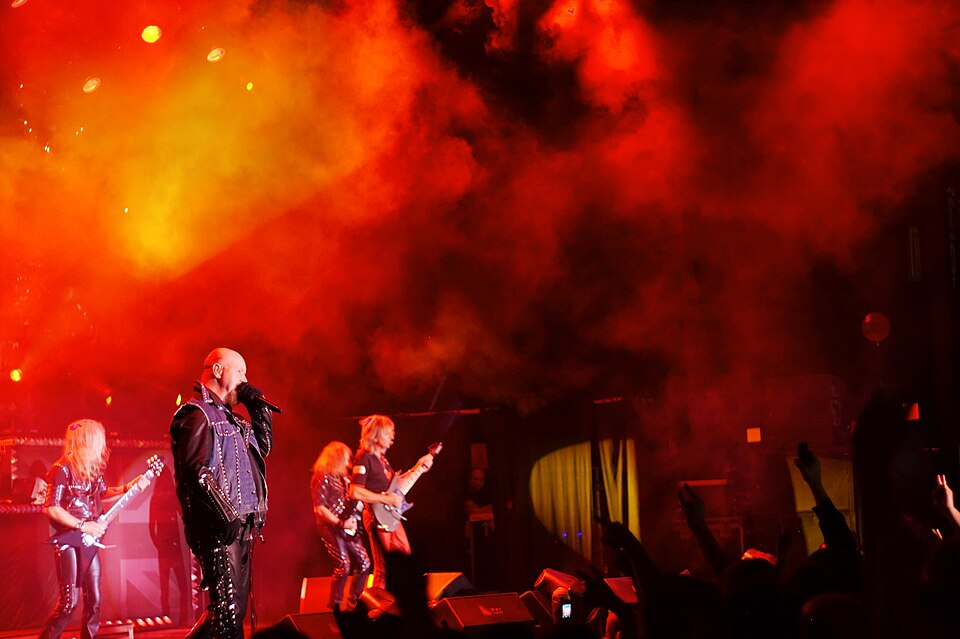

← All bands
Heavy Metal · Metal
Judas Priest
Formed in 1969 and rooted in Birmingham's Black Country, Judas Priest sharpened the raw template Black Sabbath had set down, adding twin-guitar harmonies, a leather-and-studs image, and a faster, more aggressive edge. Through the 1970s and '80s the band became one of heavy metal's defining acts worldwide, helping cement Birmingham's reputation as the genre's birthplace.
Lineup
- Rob Halford — vocals
- Glenn Tipton — guitar
- K.K. Downing — guitar
- Ian Hill — bass
- Scott Travis — drums

Discography & Spotify
Three landmark albums, streamable in full.